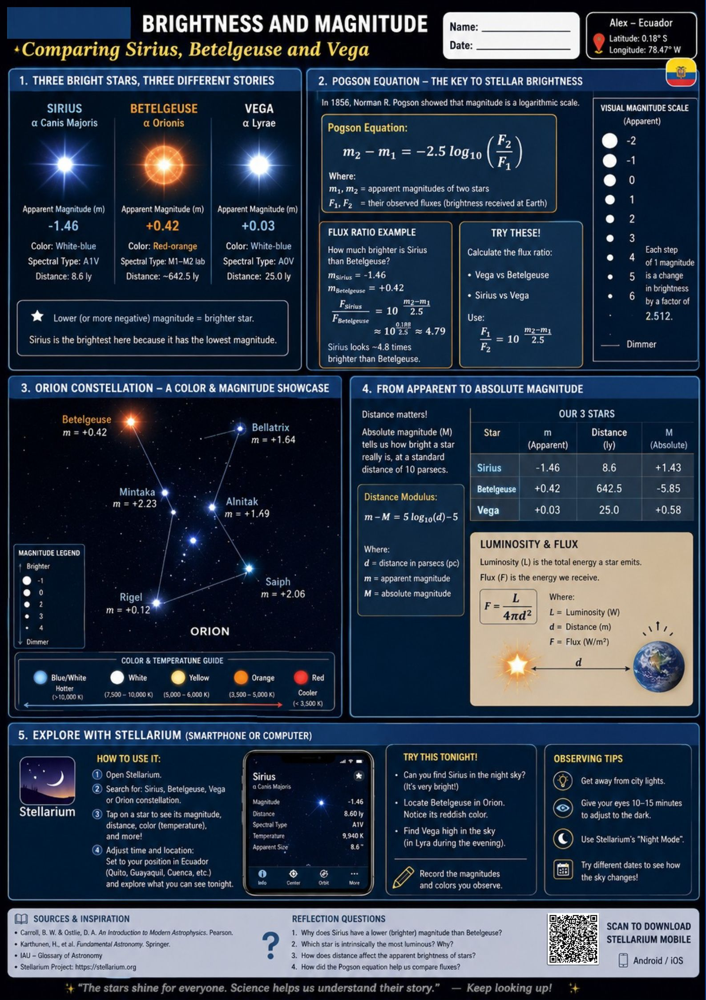

Innovation • Accessibility • Education
Transforming undergraduate physics education through smartphone-based laboratories.
Explore ResearchSmartphones have emerged as accessible and scalable tools for experimental physics education. Their integrated sensors allow the implementation of laboratory experiences in low-resource contexts while promoting educational equity.
Analyze the pedagogical and technical conditions necessary to implement smartphone-based physics laboratories in low-resource environments.
Limited laboratory access constrains STEM learning.
Smartphone sensors provide measurements comparable to standard instruments.
Improves engagement, autonomy and higher-order thinking skills.
Teacher training and institutional support remain essential.
54 selected studies.
Device + Learner + Social Context
Identification, screening, eligibility and inclusion process.
Student performance increased:
60.0 → 81.82
The effectiveness of smartphone laboratories depends on technical capabilities, pedagogical implementation and institutional support.
Learning about nomy

Acceleration analysis using smartphone sensors.
Magnetic field measurements using smartphone magnetometers.
General Coordinator
Technology Coordinator
Research Coordinator